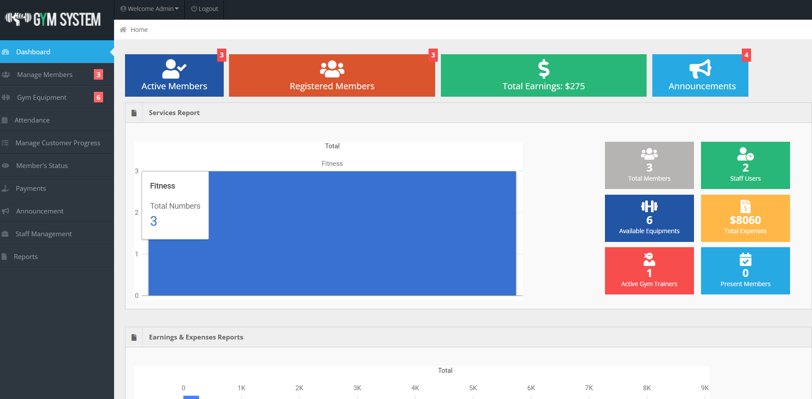
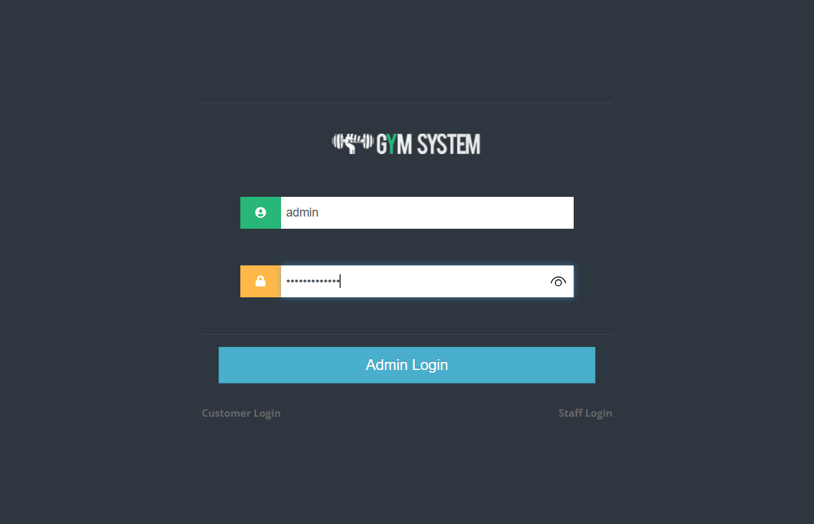
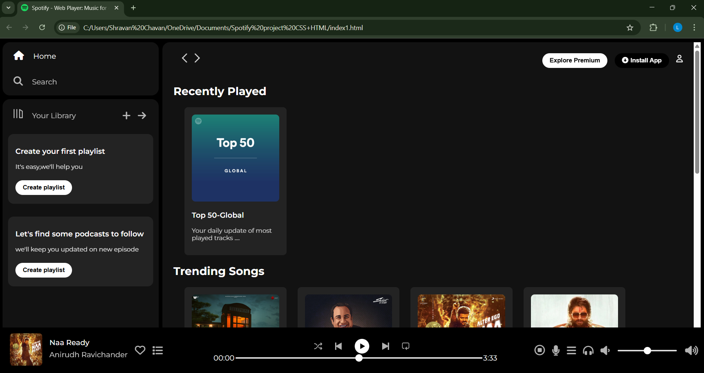
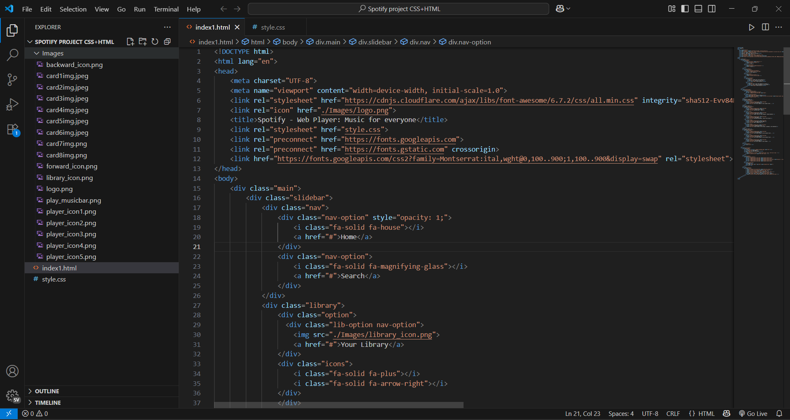
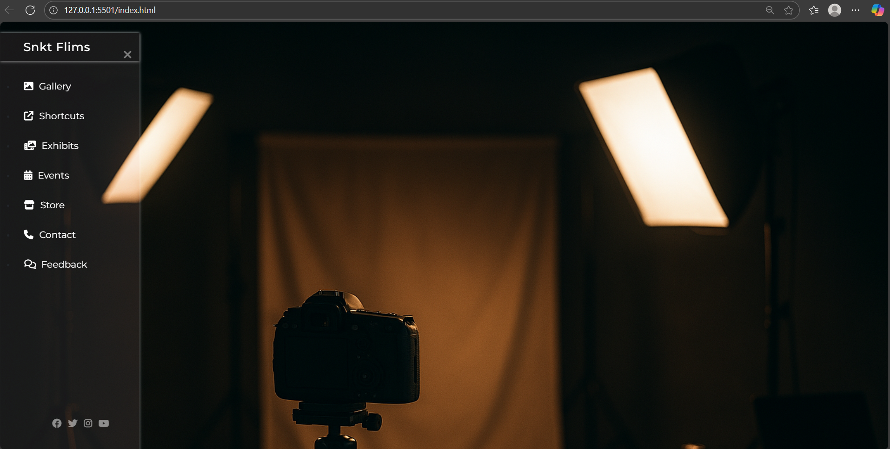
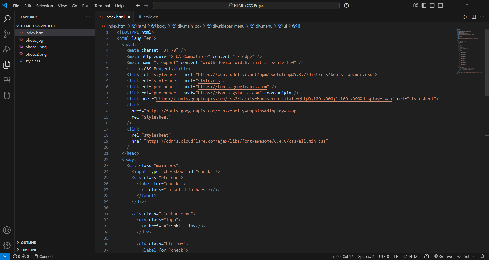
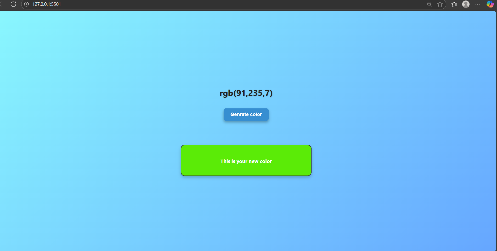
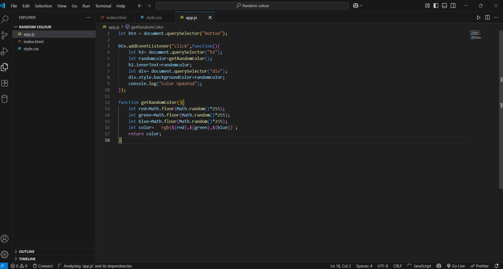

I developed a Gym Management System with a primary focus on Database Management using SQL. The system maintained member records, trainer details, workout schedules, and payment information in a structured relational database. By implementing queries, joins, and constraints, I ensured data integrity, easy retrieval, and efficient management of gym operations. This project strengthened my understanding of DBMS concepts such as normalization, relational schema design, and SQL query optimization, while also integrating a simple front-end using HTML, CSS, and JavaScript..
 I created a Spotify Clone using only HTML and CSS, focusing on replicating the user interface of the music streaming platform. The project included a visually appealing homepage, navigation bar, playlists section, and responsive layouts without backend functionality. This project enhanced my front-end development skills, particularly in layout design, styling, and responsive UI creation.
 I designed and developed a Photography Website using HTML and CSS to showcase photo collections in an elegant and responsive layout. The project included a homepage, gallery section, and contact page with a focus on visual appeal, typography, and layout design. This project strengthened my skills in front-end development, responsive design, and creating user-friendly interfaces for creative portfolios.
 I developed a Random Color Generator using HTML, CSS, and JavaScript, which dynamically produces colors with each click. The project displayed the generated color along with its HEX/RGB code, allowing users to copy and use them. This project improved my understanding of JavaScript DOM manipulation, event handling, and color code generation, while strengthening my practical coding skills.
 